FamLedger Complete Guide
Welcome to the official documentation of FamLedger. This guide is structured step-by-step to explain with absolute simplicity how to configure and make the most of every single feature in the app.
👋 Chapter 1: Welcome and First Launch
FamLedger is designed with a strict philosophy: "no central servers, no registration, and 100% offline". All data you input remains locked inside your smartphone's local memory.
The Welcome Screen
Upon first launching the application, you will simply be asked to enter "your Name" (e.g. Antonio) to configure the main user. No email address, password, or registration is required: you are instantly ready to use the app!
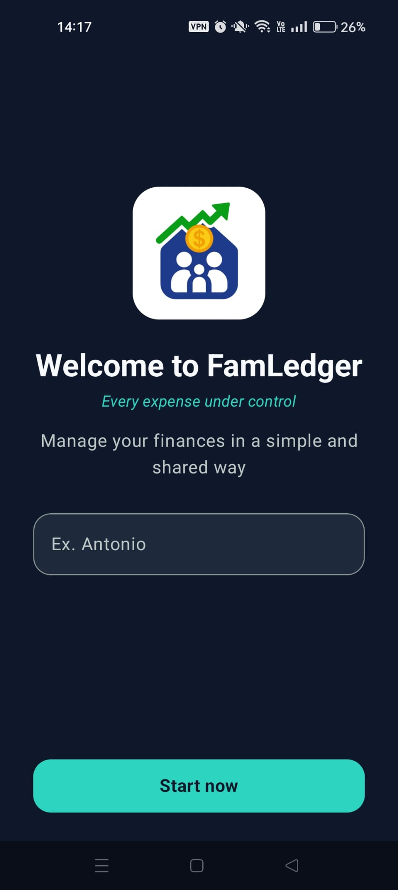
The initial welcome screen to enter your name
Setting a Security Password (Optional)
If you wish to protect the application from prying eyes, you can enable an "Access Password":
- Go to Settings (the gear icon in the bottom menu).
- Scroll down to the "Security" section and expand the menu to create a password.
- Choose a strong password and enter a very clear "Password Hint" (e.g. "My dog's name").
Once activated, the application will ask for your password on every launch. The hint will be shown immediately starting from the first wrong attempt to help you recall your key.
🏦 Chapter 2: Account Management
Before entering any transaction, you need to define "where your money is". In FamLedger, every expense or income must be associated with a specific account.
Creating a New Account
- Go to the Settings and then Manage Accounts section from the bottom menu.
- Enter the Account Name (e.g. Checking Account, Cash).
- Choose the owner.
- Press Save.
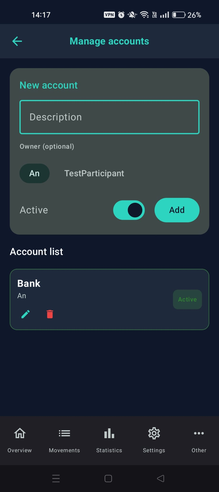
The account creation screen
💸 Chapter 3: Movements and Transactions
Recording daily expenses takes just a few seconds. FamLedger allows you to track three types of movements: "Expenses, Incomes, and Internal Transfers".
1. Expenses and Incomes
From the main Dashboard, tap the "+" button and fill in the fields:
- Amount: The amount spent or received.
- Description: A brief label (e.g. "Grocery").
- Account: Which account should be debited or credited.
- Category: Select or create a category (e.g. Food, Auto, Salary) to categorize the balance sheet.
- Shared expense: Define if an expense is to be split with someone.
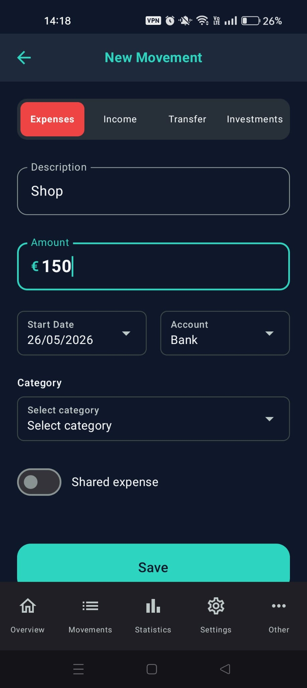
The transaction entry screen
2. Transfers (Internal Transfers)
If you move money from one account to another (for example, withdrawing €100 from the ATM to put it in your Cash wallet): activate the Transfer toggle at the top of the screen. You will be asked for the "Source Account" (where the money comes from) and the "Destination Account" (where it goes).
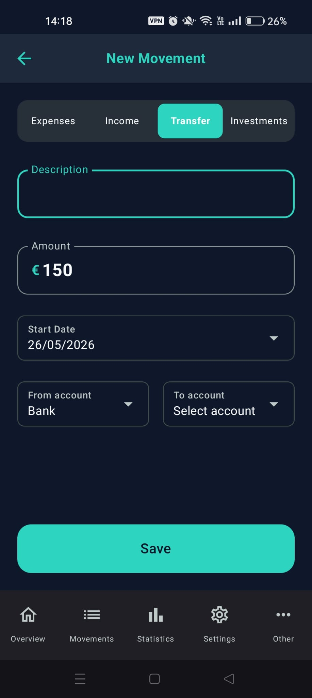
The internal transfer entry screen
3. Recurring Transactions (Bills, Salaries, Subscriptions)
If you have fixed monthly expenses (e.g. Rent):
- Go to Settings > Recurring Transactions.
- Press "+" and set the frequency (choosing from Weekly, Monthly, or Yearly).
- The app will automatically generate the transaction, without you having to do anything!
📈 Chapter 4: Investments (Markets and Savings) BETA
FamLedger includes a powerful "Investments" section designed both for stock market investors and for those who prefer safe, fixed-yield instruments.
Markets (Variable)
Use this section for ETFs, Stocks, or Cryptocurrencies. The app is equipped with an automatic online quote retriever. Simply enter the official "Ticker" (e.g. SWDA.MI or AAPL) and trigger the automatic search. The app will download the updated price and calculate your profit or loss based on your "Average Load Price (PMC)" and the "Quantity" entered.
Savings (Fixed Yield)
Use this section for "Certificate of Deposits", government bonds, or saving bonds. No ticker is needed here: simply set the "Deposited Capital", the "Annual Interest Rate (%)", the "Tax Rate" (e.g. 26% or 12.5% for government bonds), and the "Start Date". The app will calculate the interest accrued day-by-day in real time!
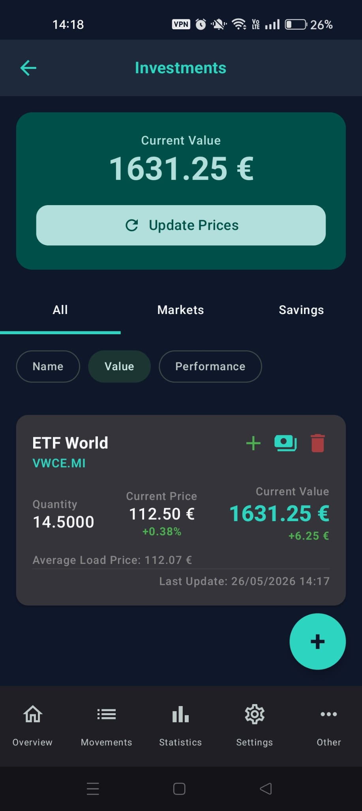
The investments dashboard screen
👥 Chapter 5: Shared Expenses (Co-debtors & Settle)
One of the most robust features of FamLedger is handling shared bills (perfect for couples, families, or roommates) to instantly answer: "Who owes how much to whom?".
1. Add Participants
Go to Settings > Participants and add your family members' names (e.g. Marco, Giulia).
2. Record a Shared Bill
When entering an expense (e.g. grocery bill of €150 paid entirely by you):
- In the transaction form, scroll down to the Shared expense section.
- Select the participants involved (e.g. Giulia).
- Choose to split equally or assign custom shares (e.g. €75 to Giulia).
- Save the expense. The app will record that you advanced €150 and Giulia owes you €75.
- Note on the Loan category: An exceptionally powerful system category designed for advanced payments. Unlike regular shared expenses (where the amount is split including the payer's share), when you record a transaction marked as a Loan, the app assigns 100% of the amount as an exclusive debt divided among the other selected participants. The payer's share is set to zero automatically.
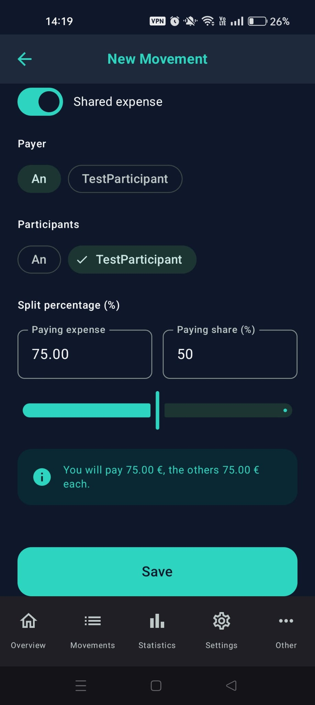
The shared expense section in the form
3. Quick Settle (Single or Group)
From the main page, the Debts Situation dashboard will show a real-time summary. To settle debts, you have two options:
- Settle single transaction: Go to Movements (bottom menu) and tap "Settle" next to the transaction you want to clear. The app will automatically create a reimbursement transaction, resetting the debt.
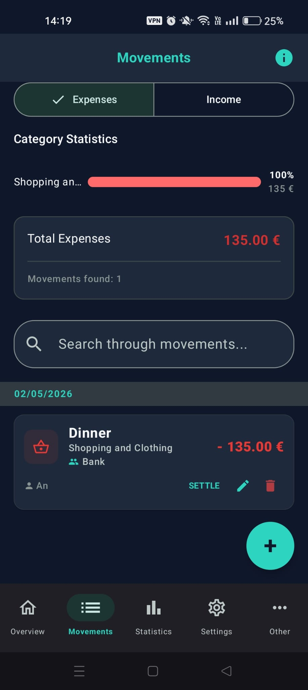
Settle single movement view
- Settle all: From the home screen, you can click on "Settle all" to repay all outstanding balances at once.
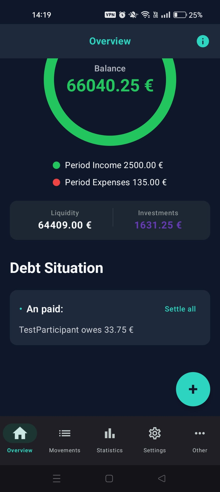
Settle all debts view
🎯 Chapter 6: Financial Goals
"Goals" (Target) allow you to plan and track your savings for concrete future projects, like buying a new car, a vacation, or building an emergency fund.
Create and Track a Goal
- Navigate to the Goals screen from the "More" menu of the app.
- Tap the "+" button at the bottom right.
- Enter a Description (e.g. New Car).
- Set the "Target" amount you wish to accumulate (e.g. €15,000).
- Define a "Due Date" by which you wish to complete the savings.
- Associate a "Linked Account" where you gather these savings (optional).
The application will monitor progress automatically, displaying a visual progress percentage bar (%).
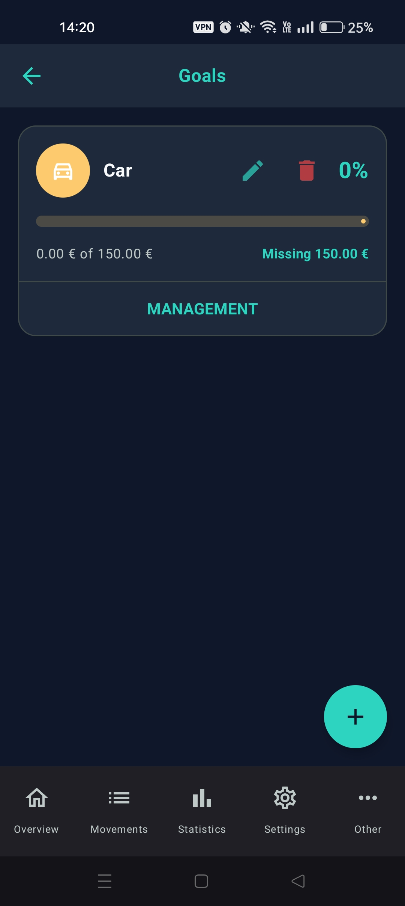
The savings goals dashboard screen
🏆 Chapter 7: Gamification and Milestones
FamLedger makes managing personal finance fun and stimulating thanks to an innovative "Gamification" system.
Unlocking Financial Medals
Financial education meets game design! As you use the application in a healthy and consistent way, you will automatically unlock milestones and receive virtual medals:
- Budget Sniper: Awarded if you stay within your monthly spending budget with precision (spending between 90% and 100% of the planned amount).
- Savings Sprint: Unlocked if in a single month your savings surplus (Incomes - Expenses) exceeds 30% of your total monthly income.
- Goal Crusher: Achieved as soon as you successfully complete at least one of your savings goals.
- Clean Slate: Unlocked the moment you settle all active debts with other participants in the shared budget.
- Consistent Saver: A reward for your consistency, unlocked by maintaining a positive surplus (income greater than expenses) for 6 consecutive months.
- Early Bird: Awarded if you record at least one movement in the first 5 days of the month for 3 consecutive months.
- Mindful Planner: "One-Time" medal unlocked when you first configure a monthly spending budget.
- Debt Settled: A special "One-Time" milestone unlocked when all historical debts registered in the app are definitely settled.
- Net Worth Milestones (One-Time): Five exclusive gold medals celebrating the growth of your overall net worth (sum of cash accounts and the valuation of investments):
- Start of the Journey: Reach a net worth of at least 10,000.
- Capital Builder: Reach a net worth of at least 50,000.
- Six-Figure Wealth: Reach a net worth of at least 100,000.
- Financial Freedom: Reach the incredible milestone of 250,000 in total net worth.
- Financial Independence: Reach the incredible milestone of 500,000 in total net worth.
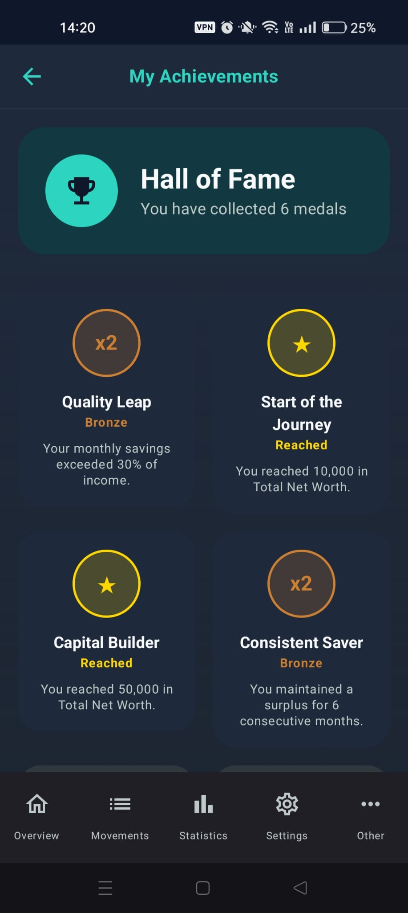
The achievements showcase screen
🔍 Chapter 8: Spending Anomaly Detection
The Anomalies screen acts as an intelligent sentinel for your family budget. Instead of just displaying a list of expenses, the application compares every single expense of the current month in real time with your historical average spending per transaction in that specific category (by default analyzing history up to the previous 24 months (value customizable in settings)).
If a specific transaction exceeds this historical average beyond a certain tolerance percentage, the app will flag it immediately as an anomalous expense.
How does the detection algorithm work?
The app analyzes the registered transactions and processes three different severity levels for the overrun, based on the configurable percentage thresholds in Settings > Anomaly Thresholds:
- 🔵 Low Anomaly: Triggered if the expense exceeds the category's historical average beyond the set minimum threshold (e.g. greater than +10%). Displayed with a blue badge.
- 🟡 Medium Anomaly: Triggered if the expense exceeds the historical average beyond the intermediate threshold (e.g. greater than +30%). Highlighted in yellow/orange.
- 🔴 High Anomaly: Detected when a single transaction records an exceptional peak exceeding the average beyond the maximum threshold (e.g. greater than +50%). Displayed with a red badge to call your attention immediately.
Within the Anomalies page, you can use the convenient filters at the top to analyze specific periods (selecting Year and Month) or to filter the anomalies displayed based on their severity level (All, Low, Medium, High).
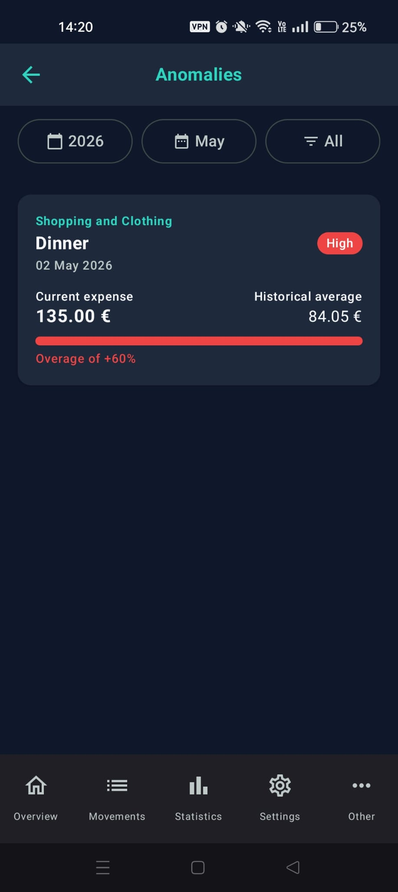
The anomaly analysis screen
⚙️ Chapter 9: Application Settings
The "Settings" screen is the control center where you can fully customize the behavior of FamLedger. It is a fundamental chapter that includes several advanced tools to tailor your budget.
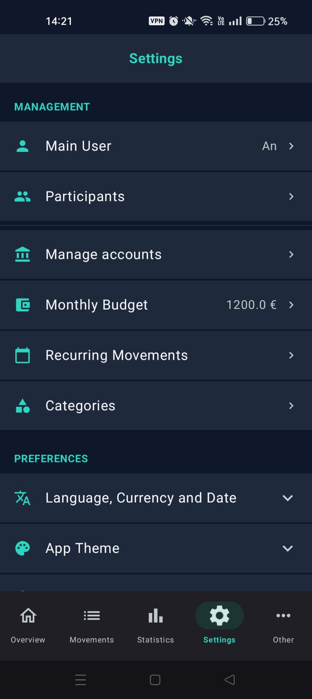
The settings screen
🏷️ 9.1 Managing Custom Categories
In FamLedger you are completely free to create the expense and income categories that best fit your real life. The app does not impose a rigid template!
Creating a Custom Category:
- Access the Categories section (from the Settings > Categories menu).
- You will find the convenient creation/modification panel directly at the top of the screen.
- Enter the name you wish to give to the category in the Category Name field (e.g. Gym or Restaurants).
- Choose the category type between Expenses or Incomes by selecting the corresponding filters. The identifying color (red for expenses and green for incomes) is paired completely automatically and dynamically by the app to maintain color harmony, so you won't need to select it manually.
- Tap the circular icon button on the left of the form to open the bottom sheet icon selection panel and choose the custom icon you prefer among the many available.
- Press the Add button (or Save if you are editing an existing category) to make the category active immediately.
You can modify or delete created categories at any time (except for system ones) using the edit (pencil) and delete (trash) icons placed next to each item in the list.
FamLedger includes some special System Categories that cannot be modified or deleted as they are required for the correct operation of the app's automation:
- Transfer: Used automatically when you transfer funds between two of your accounts (internal transfers).
- Reimbursement, Initial balance, Investment, Salary, Other: Default and essential categories to track automatic family balance transactions.
- Loan: An exceptionally powerful system category designed for advanced expenses. Unlike regular shared expenses (where the amount is split including the payer's share), when you record a movement marked as a Loan, the app assigns 100% of the amount as an exclusive debt divided among the other selected participants. The payer's share is set to zero automatically.
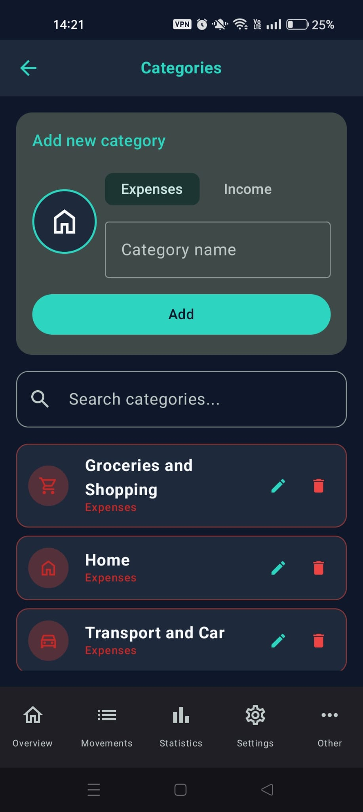
The category management screen
🔄 9.2 Recurring Transactions and Automations
Stop entering the same transactions by hand every month! For utility bills, streaming subscriptions (Netflix, Spotify), rent, or salaries, set a recurring rule:
- In Settings > Recurring Transactions, press "+".
- Fill in the details (amount, description, debit account, and category).
- Set the "Frequency" (choosing from Weekly, Monthly, or Yearly).
- When the due date arrives, FamLedger will automatically inject the transaction into your ledger.
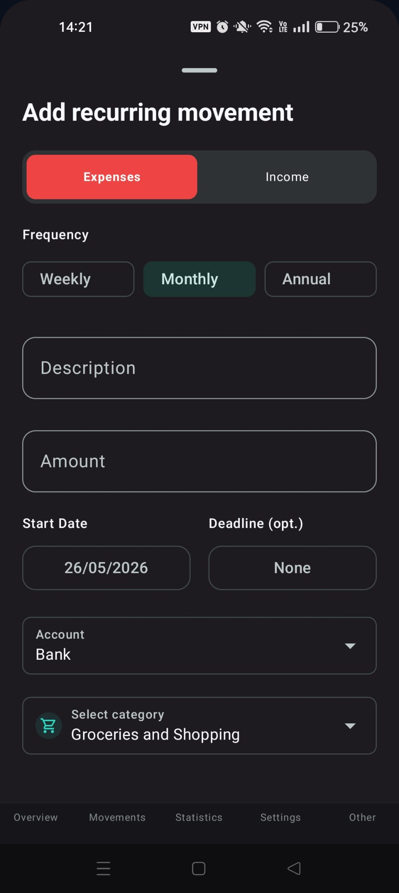
The recurring transactions screen
🔒 9.3 Security and Privacy (Password & Obfuscation)
FamLedger offers two advanced security tiers to protect your sensitive financial data when using the app in public:
- 🔒 Security Password (Offline): If enabled in settings, it protects access to the application by requesting the password at launch. In case you enter an incorrect password, the configured password hint will be shown immediately starting from the very first wrong attempt, helping you quickly unlock your data in case of minor memory lapses.
- 🕶️ Obfuscate Amounts Mode: Activating this switch temporarily replaces all figures and balances on the main Dashboard and accounts with discreet dots (e.g. •••,•• $). You can temporarily reveal them with a simple tap, perfect when opening the app on public transit or around other people!
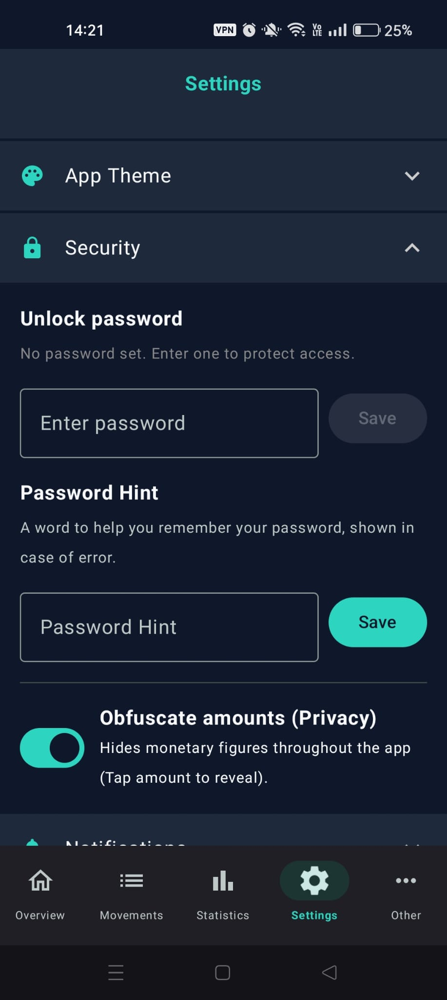
The security settings screen
💱 9.4 Profile, Participants, and Local Preferences
- Edit Profile: Change your name at any time.
- Manage Participants: Add, edit, or disable family members/partners/roommates with whom you split common debts.
- Language and Currency: Choose your preferred currency and app localization on the fly from the 6 available languages (Italian, English, Spanish, French, German, Portuguese) to customize the app to your region.
👑 Chapter 10: FamLedger PRO (Exclusive Features)
For users who wish to deep-dive into their financial situation and guarantee the security of their historical data over time, we created "FamLedger PRO". A single una tantum (one-time) purchase (buy once in the Store, keep it forever) that unlocks the full potential of the application and represents direct and fundamental support for the work and dedication of our independent team. Your purchase allows us to keep improving FamLedger, keeping it safe, 100% offline, free from trackers, and completely focused on your privacy!
📊 10.1 Net Worth Charts and Statistics
Understanding the overall evolution of your wealth over time is key to making wise financial decisions.
By activating the PRO version, you will have access to a series of advanced analysis tools: from the monthly expenses chart to the historical comparison between the months of two years of your choice, up to the line chart showing the evolution of your overall Net Worth. This final value is calculated in real time by summing the balances of all your accounts and the updated valuation of all your investments (both variable markets and fixed yields).
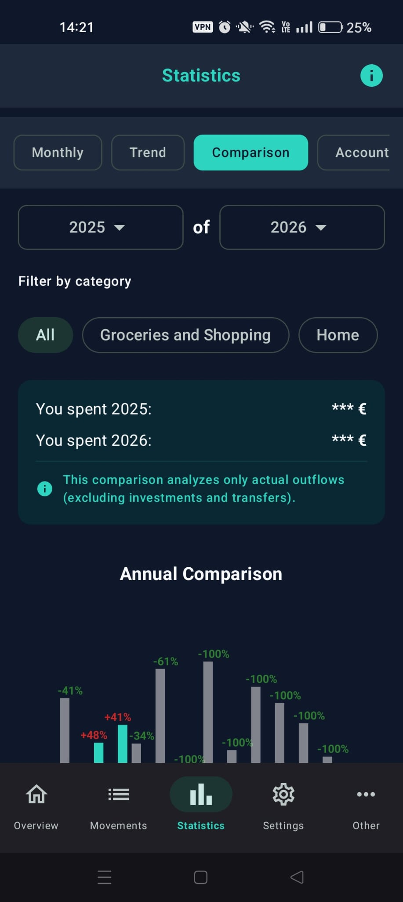
The PRO statistics and charts screen
💾 10.2 Backup, Restore and Migration (JSON/CSV)
Since FamLedger is a 100% offline application, making backups is crucial. If you change phones or format the device, you will need this file to avoid losing your financial history.
JSON Export: Creates a file containing all your accounts, transactions, participants, and investments ready to be shared on Google Drive, sent via email, or saved to your computer.
CSV Export: Allows you to export the list of transactions in a spreadsheet format compatible with Excel or Google Sheets to conduct customized analysis and charts on your computer.
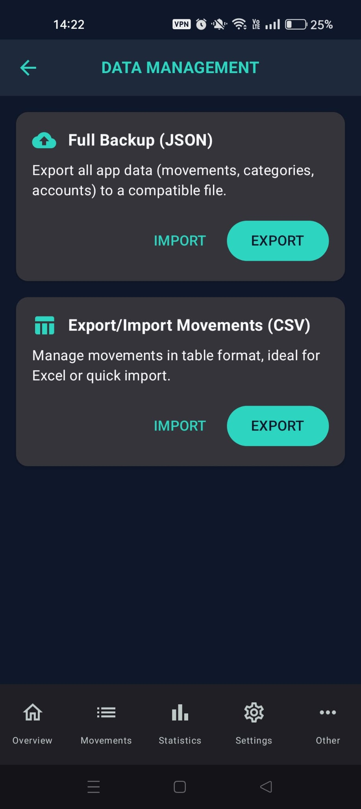
The backup and import/export screen
🚫 10.3 100% Ad-Free Experience
By unlocking the PRO version, the application will instantly remove every form of advertisement banner or insertion from all operational screens of your family budget (Dashboard, Movements, Investments, Anomalies, Achievements, Goals), leaving you with a clean, distraction-free workspace.
✨ What's New & Updates
FamLedger is constantly evolving. In this section, you will find the main new features introduced in the recent updates of the application.
🎙️ Intelligent Voice Input [BETA]
We have added the ability to record your expenses directly with your voice! By clicking on the microphone icon next to the "+" button in the Dashboard or the Movements list screen, you can dictate your transactions quickly and comfortably.
The app supports both a structured key-value method (Recommended) for optimal accuracy:
"Description pizza Amount 15 Date yesterday Category Leisure shared with Mark"
And a natural fast fallback method (e.g., "15 for pizza yesterday").
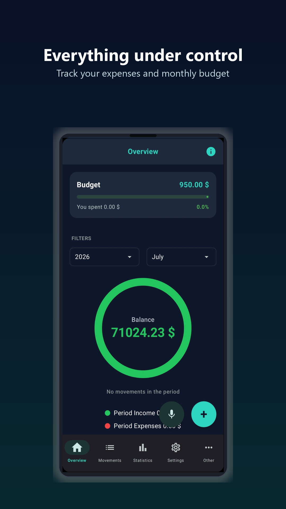
The new interface with the microphone button placed next to the "+"